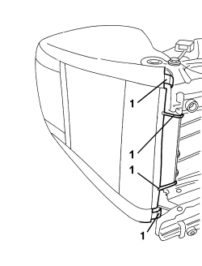
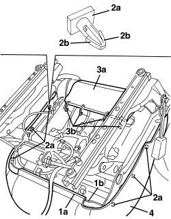
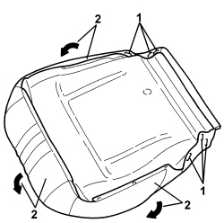
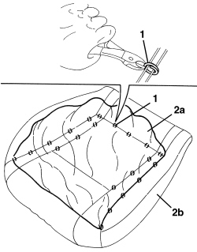
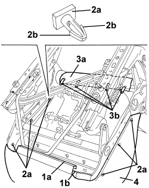

7045D21 FRONT SEAT CUSHION COVER, LEFT OR RIGHT - R.R. WITH SEAT REMOVED
- Path
- Procedures > 70 FITTINGS > 7045 FRONT SEATS > 7045D FRONT SEAT TRIM/PADDING > 7045D21 FRONT SEAT CUSHION COVER, LEFT OR RIGHT - R.R. WITH SEAT REMOVED
- Kind
- repair procedure (removal / refitting; the operation number is the code)
- Applies to
- all engines; all production periods
- Interactive page
- https://sloeber94.github.io/elrnDB-aBrrSpdr/en/#/946004156
Applies to: all engines; all production periods; only with equipment: Electric seats
 Removing
Removing
 Refitting
RefittingOp. 7045A43 FRONT SEAT EXTERIOR GUARD (ONE), LEFT OR RIGHT - R.R
1. Disconnect the backrest trim rear retainers.

Applies to: all engines; all production periods; only with equipment: Electric seats
1. Disconnect front retainer (1a) of the cushion trim from seat frame profile (1b).
2. Release side retainers (2a) by undoing tabs (2b).
3. Release rear part (3a) of cushion trim from retainers (3b).
4. Remove the cushion with padding.

Applies to: all engines; all production periods; only with equipment: Electric seats
- If necessary, separate the cushion trim from the padding as indicated below.
1. Remove the retainers on the lower side of the trim.
2. Prise up the trim and release from the padding edge.

Applies to: all engines; all production periods; only with equipment: Electric seats
1. Turn the cushion over and cut all the upper cushion trim retainers using cutters.
2. Separate trim (2a) from padding (2b).

Applies to: all engines; all production periods; only with equipment: Electric seats
Refitting
Removing- Check that the cushion trim is not damaged.
- If removed, position the cushion cover padding and crimp the retainers using special pliers.
- Prise up the trim around the edge of the padding.
- Fit the retainers on the lower side of the trim.
- Position the cushion trim with padding on the seat frame.
- Connect the rear part of the cushion trim to the retainers.
- Attach the side retainers.
- Connect front retainer of the cushion trim to the seat frame profile.
- Connect the backrest trim rear retainers.
Op. 7045A43 FRONT SEAT EXTERIOR GUARD (ONE), LEFT OR RIGHT - R.R
Applies to: all engines; all production periods
Removing
RefittingOp. 7045A56 DRIVER'S SEAT HEIGHT ADJUSTMENT DEVICE CONTROL LEVER - R.R
Op. 7045A33 CONTROL LEVER FOR DEVICE TO ADJUST FRONT SEAT SWINGING - RR
Op. 7045A43 FRONT SEAT EXTERIOR GUARD (ONE), LEFT OR RIGHT - R.R
1. Disconnect the backrest trim rear retainers.

Applies to: all engines; all production periods
1. Disconnect front retainer (1a) of the cushion trim from seat frame profile (1b).
2. Release side retainers (2a) by undoing tabs (2b).
3. Release rear part (3a) of cushion trim from retainers (3b).
4. Remove the cushion with padding.

Applies to: all engines; all production periods
- If necessary, separate the cushion trim from the padding as indicated below.
1. Remove the retainers on the lower side of the trim.
2. Prise up the trim and release from the padding edge.

Applies to: all engines; all production periods
1. Turn the cushion over and cut all the upper cushion trim retainers using cutters.
2. Separate trim (2a) from padding (2b).

Applies to: all engines; all production periods
Refitting
Removing- Check that the cushion trim is not damaged.
- If removed, position the cushion trim on the padding and crimp the retainers using special pliers.
- Prise up the trim around the edge of the padding.
- Fit the retainers on the lower side of the trim.
- Position the cushion trim with padding on the seat frame.
- Connect the rear part of the cushion trim to the retainers.
- Attach the side retainers.
- Connect front retainer of the cushion trim to the seat frame profile.
- Connect the backrest trim rear retainers.
Op. 7045A43 FRONT SEAT EXTERIOR GUARD (ONE), LEFT OR RIGHT - R.R
Op. 7045A33 CONTROL LEVER FOR DEVICE TO ADJUST FRONT SEAT SWINGING - RR
Op. 7045A56 DRIVER'S SEAT HEIGHT ADJUSTMENT DEVICE CONTROL LEVER - R.R
Topics linked from this page (3)
- 7045A33 CONTROL LEVER FOR DEVICE TO ADJUST FRONT SEAT SWINGING - RR
- 7045A43 FRONT SEAT EXTERIOR GUARD (ONE), LEFT OR RIGHT - R.R
- 7045A56 DRIVER'S SEAT HEIGHT ADJUSTMENT DEVICE CONTROL LEVER - R.R
Topics that link to this page (6)
- 7045A86 FRONT SEAT FRAME (ONE), LEFT OR RIGHT, R.R.
- 7045D18 FRONT SEAT CUSHION SPRINGING (ONE), LH OR RH - R R
- 7045D20 FRONT SEAT CUSHION COVER, LEFT OR RIGHT - R.R.
- 7045J29 FLEXIBLE SHAFT FOR FRONT SEAT LIFTING MOTOR (ONE), LEFT OR RIGHT - R.R.
- 7045M22 HEATER PAD FOR FRONT SEAT CUSHION, LEFT OR RIGHT - R.R. FOLLOWING ELECTRICAL CIRCUIT CHECK
- 7065A34 PASSENGER PRESENCE SENSOR ON FRONT SEAT FOR INDICATING SEATBELT UNFASTENED R R